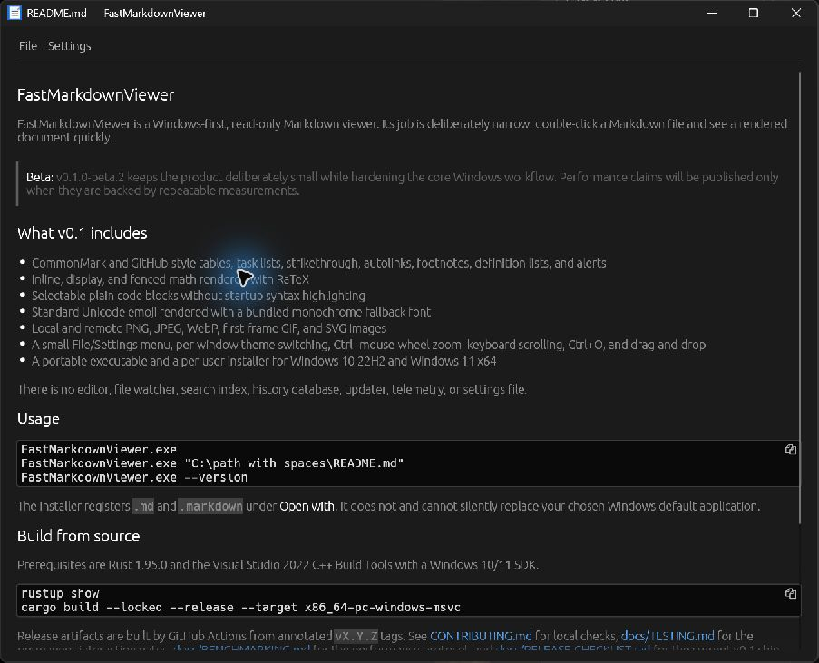

One job
Open one UTF-8 Markdown file, render it, and let you select and copy the text.
No editor chrome. No project index. No WebView. FastMarkdownViewer opens one local file as a clean rendered document.
v0.1.0-beta.2 is unsigned. Windows may show a SmartScreen warning; verification instructions are below.

The real beta application rendering the repository's README.
Open one UTF-8 Markdown file, render it, and let you select and copy the text.
Plain code and asynchronous math and image work keep expensive extras away from the first document frame.
No accounts, analytics, update pings, settings writes, history database, or persistent cache.
Local documents are not uploaded. FastMarkdownViewer has no telemetry or update checker and does not execute HTML.
Visible remote images load automatically in memory. That request exposes your IP to the image host, but sends no cookies, credentials, or referrer. Responses, redirects, formats, and decoded dimensions are bounded.
Read the complete privacy and network policy →The benchmark fixtures and harness are public. Until the 30-launch protocol is complete, the project makes no absolute startup-time claim.
Inspect the benchmark materials →SHA256SUMS.txt from the same canonical GitHub Release.Get-FileHash .\FastMarkdownViewer-0.1.0-beta.2-windows-x86_64.exe -Algorithm SHA256gh attestation verify .\FastMarkdownViewer-0.1.0-beta.2-windows-x86_64.exe --repo {{REPOSITORY_SLUG}}Checksums and attestations establish origin and unchanged bytes. They do not suppress SmartScreen; v0.1.0-beta.2 is transparently unsigned.
Planned follow-ons include OSS code signing, Windows ARM64, macOS and Linux builds, high-contrast design, then prepared Scoop and winget manifests. Search, editing, file watching, Mermaid, and syntax highlighting remain intentionally outside v0.1.